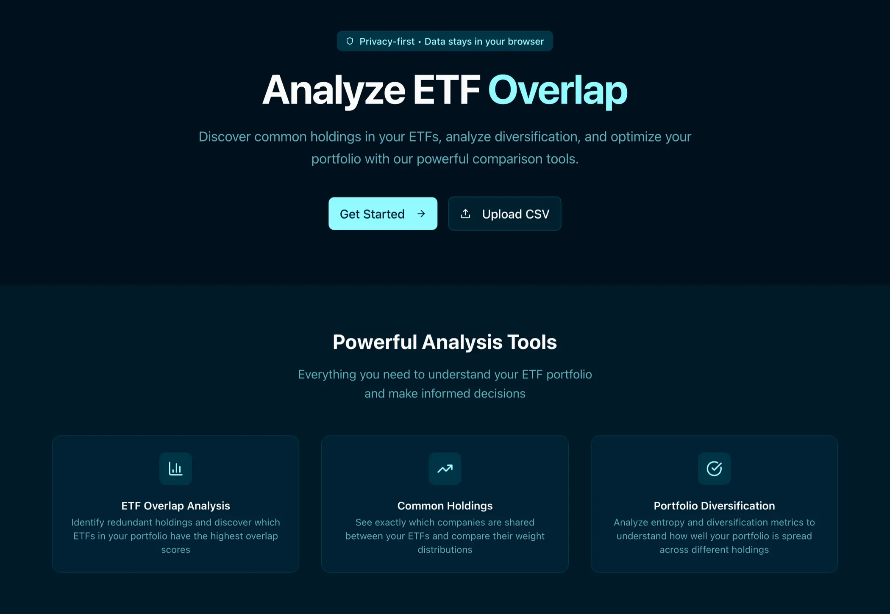

Experimenting with Vibe Coding
Recently, out of both curiosity and personal interest, I decided to run an experiment: building a small web application using vibe coding only. The whole thing lasted about two or three weeks, working no more than a couple of hours a day. This post was born from a voice note, and during the correction phase I tried to maintain the conversational style that naturally emerged, limiting the modifications suggested by AI.
Since my goal was to explore vibe coding itself, I didn't want to take on anything too ambitious. I preferred to work on something simple—or at least manageable—using well-established web development patterns. I wasn't looking for complex visualizations; basic UI components like tables, buttons, and selectors were more than enough.
I also wanted the project to be personally meaningful—something that could be useful to me but also to others, with a practical angle. I ended up focusing on the problem of overlapping compositions among two or more ETFs. An ETF (Exchange-Traded Fund) is an investment fund that tracks an index, commodity, bonds, or a basket of assets like an index fund, but trades like a stock on an exchange.
As you know, an ETF is composed of many underlying assets, so when picking one, it makes sense to ask: How different is this ETF's composition from the others I'm considering, and how much does it overlap with the ones I already own?

The tool calculates overlap scores between ETFs, measures diversification through entropy analysis, and helps you identify which companies appear across multiple ETFs in your portfolio. Visit etfour.vercel.app for more information.
The topic itself isn't new—there are already apps that do this—but it felt simple enough to be a good candidate for an experiment driven by AI agents.
What follows are a few personal notes and reflections from that experience. I won't dive too deep into the technical side—just enough to set the context. For the record, I used Next.js, shadcn components, and Tailwind CSS.
As for the editor, I actually used two: I started with Zed, then switched to Cursor. I switched to Cursor just because I wanted to explore the capabilities of both the editors.
A Spec-Driven Approach
I took a spec-driven approach—I asked the AI agent to create Markdown documents that defined the specs of what we were building in as much detail as reasonably possible. I say "as much detail," but really it was about finding the right balance: detailed enough to be useful, but short enough that I'd actually read them. Have a look at GitHub's spec-kit.
The goal was to understand the reasoning process the AI would follow, so I could catch any wrong turns early on. This approach forced me to think ahead about how the app should come together: how to break it down into independent features, and how to orchestrate them into a decent user experience.
So instead of just telling the AI "build an app that does this and that," I made smaller, atomic, functional requests, each contributing to a bigger goal that I understood—even if the AI didn't yet.
The Cognitive Load of Vibe Coding
The pace of vibe coding—almost frenetic at times—ended up being mentally exhausting. In the same amount of time, I managed to produce much more than I could have without AI, but that also meant more cognitive load: more code to read, more decisions to make, and the constant need to monitor what the AI was doing.
All of that took its toll. I think it's necessary to find a new balance when coding this way. Personally, I find reading code more tiring than writing it, and even though I didn't read every single line, just keeping an eye on the AI's output was energy-draining.
Code Ownership and Testing
Let's be honest: even though I had a clear mental model of what the AI wrote, not having written it myself meant I didn't fully "own" the code. That sense of mastery I get when writing by hand just wasn't there.
The only workaround I found was to move in small steps—after each new feature, write enough unit tests to cover it and protect it from regressions.
For context, even though the app is quite small, it's covered by about 700 unit tests and 50 end-to-end tests. This extensive test coverage was explicitly required in the specs to prevent breaking existing functionality and to maintain confidence in the codebase. In the specs, I explicitly required that the tests be run regularly to prevent breaking existing functionality.
When AI Gets Stuck
In roughly 95% of cases, the AI handled its tasks correctly. But there were moments when it ran into obstacles it couldn't overcome on its own.
In those situations, I had the clear impression that—even with simple problems—the AI would get stuck in a reasoning loop, repeating the same mistake over and over.
Based on this and on past experiences, I've come to believe that AI struggles to admit it can't do something. It seems to prefer making silly mistakes rather than stopping and saying, "I can't proceed."
The Cost Problem
Let's talk about costs. In this experiment, I used the free trials of Zed and Cursor, but I also spent some real money. Without those free trials, the three-week project would have cost just under €100—which, unfortunately, is too much for using AI agents on a regular basis.
That's interesting if I think back fifteen years, when I first started writing web software. Even though I worked on a cheap computer, I had access to the same tools professionals used—everything was free and open source. This democratization of tools was crucial for learning and professional development, allowing beginners to reach professional levels without financial barriers. That meant I could reach a professional level even as a beginner.
Today, that's no longer the case. What a professional can afford is often out of reach for a newcomer. I really think costs need to come down, because vibe coding will only become more widespread from here.
A Paradigm Shift
To wrap up, I don't think this new way of programming is a passing fad. It's going to keep spreading and will eventually become the standard way to write code.
We're witnessing a paradigm shift: some low-level skills are becoming less critical, while others—especially architectural thinking—are becoming more important.
In short, having the mindset of an architect now matters more than the craftsmanship of a carpenter. The AI excels at recognizing and reproducing patterns, so what truly counts is understanding how to design and direct those patterns toward a coherent whole.